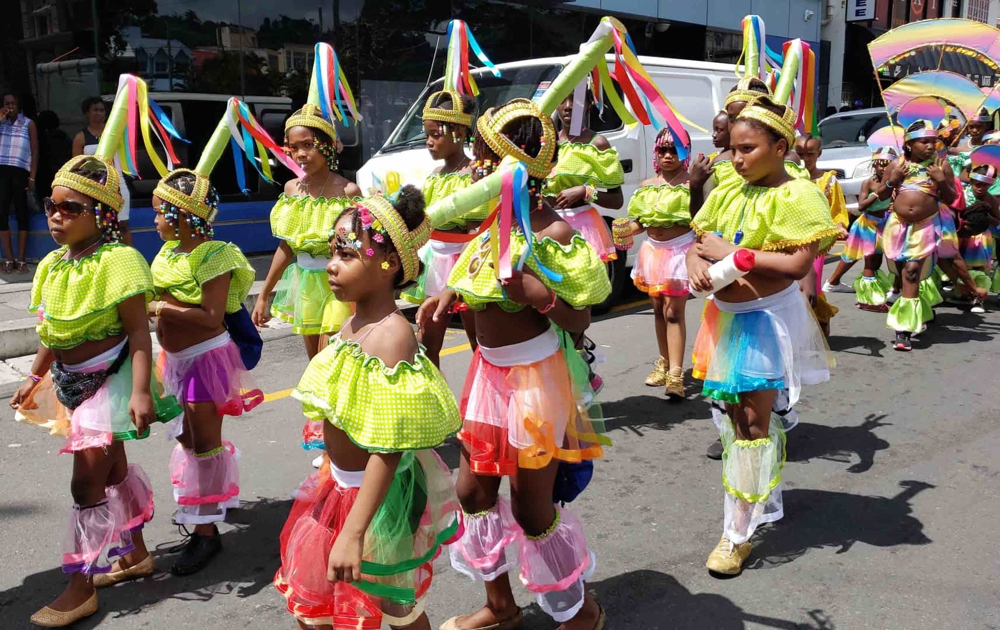
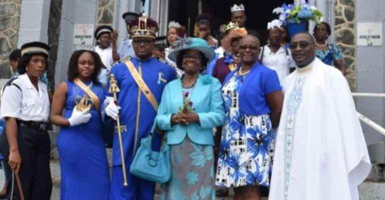
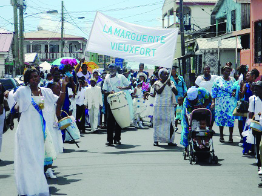
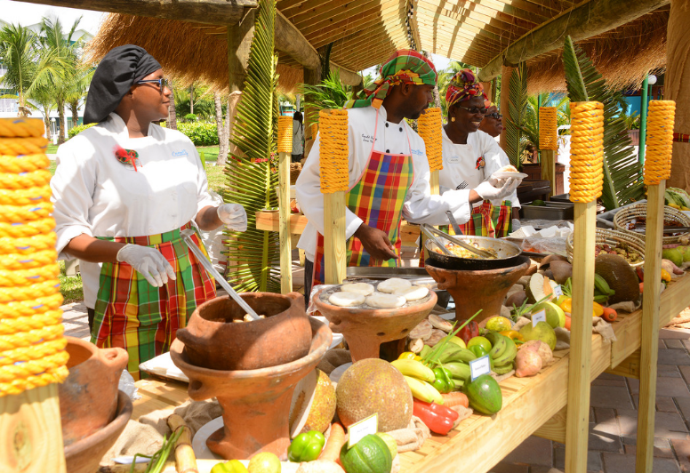
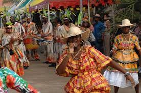
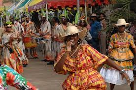
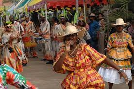

In St. Lucia Carnival is the first cultural activity which occurs during the year.
Carnival is a vibrant display of local culture and heritage which takes place in St.Lucia during July(Next year carnival is on July 14th, 2022 - July 21st, 2022). This cultural festival consist of many days and many different activities which occur before the main carnival event(which happens during two consecutive days). The carnival celebrations also occur in many parts of the island at the same time, however, the main area is the capital of the island, Castries. These carnival events consist of:
Wild Fetes(Otherwise Known as crazy parties where all participants celebrate and prepare for the following events to come)
Pageants(Competetive pageants where held before carnival to win the title of carnival queen)
J'ouvert(This is the opening street party, that begins before dawn as the word J’ouvert stems from the French word for day break. It is a spontaneous celebration where revelers(carnival-goers) get covered head to toe in body paint, powder or foam.)
Kiddies Carnival(This event usually occura the day before the main carnival, kiddies carnival is a prade of bands made for children or kids interested in celebrating the culture)

Carnival evolved from the mix of Catholic, Caribbean, European and African heritage found on this island which is why this celebrating is traditionally held before Catholic Lent as a form of feasting before a time of sacrifice.The main carnival event is celebrated with lively colorful prades. The prades are mad of about four bands who compete to win the title of best Mas Band. While the bands parde spectators would gather around to view of have fun on the side lines while enjoying the elements of carnival, such as:
Music(The music is a mixture of calypso with instrumentals and soca from local Caribbean artists)
Dances(Mostly dancehall moves with a bit of choreography)
La Rose Festival(August 30th)
In St. Lucia there are two flower festivals.
The first one during the year is the La Rose(Lawoz) or the rose festival. This is a folk performance that belongs to a number of different theatrical traditions and social phenomena and is practiced in many villages and towns around the island. There is performance of things using masquing, dance, mime, play-acting and costume. The performance is like street theatre because on the grand day of the festival the performance takes place on the streets. Schools and churches elect people to act as king, queen, prince, princess, nurse, policeman, lawyer and many different positions in society. During the performances they parde and sing songs and chants which are choreographed and rehearsed days before the main event. The La Rose Festival was introduced into St. Lucia's culture from the period of slavery and to this day citizens whorship the rose and stands strong in the society
Story of the La Rose Festival: The story goes that a girl named Rose worked in the great house on a plantation. Her relatives and friends working in the fields and elsewhere on the property were quite badly treated often without enough to eat. So Rose was in the habit of taking loaves of bread from the kitchen, hiding them in her apron, and taking them at night out to her relatives. She was soon regarded with suspicion and watched. One evening while she was carrying the bread out she was stopped by the guards and ordered to open her apron. She had no choice but to comply; as she did so a miracle was created – instead of loaves, bunches of roses fell from her apron. This saved her and was divine reward for her acts of resistance. She became Santa Rosa de Lima (Saint Rose of Lima), sanctified and celebrated by the folk in St Lucia. A possible bridge between the island and the original setting of the story is the strong Roman Catholicism. The island celebrants adopt both the sanctified girl’s name and the rose flower immortalised in the miracle, as their symbol.
La Marguerite(October 17th)

La Marguerite is the second flower festival celebrated in St. Lucian culture.
The society of La Marguerite(Lamagrit) stand in opposition to La Rose. They hurl insults at each other and pretend to be enemies, they play-act a perennial feud, ridiculing each other in song. Citizen within society needs to decide which society they are part and serious about. Most times people just gravatate to the traditional flower festival which is already withing their families.
However, just like the La Rose Festival their performance is of things using masquing, dance, mime, play-acting and costume. The performance is like street theatre because on the grand day of the festival the performance takes place on the streets. Schools and churches elect people to act as king, queen, prince, princess, nurse, policeman, lawyer and many different positions in society. During the performances they parde and sing songs and chants which are choreographed and rehearsed days before the main event.
Additionally, The societies originated in the time of slavery as co-operative work groups created for mutual support, and assistance in time of trouble. In former years the St Lucian society was split in affiliation to one or the other group. At times membership has been illegal, and it has also been condemned by the Roman Catholic Church. Nevertheless, the societies survived, although their nature has changed through the centuries. Nowadays, the two historical societies are largely devoted to solidarity through recreation.

Jounen kweyol(October 30th-October 31st)

Jounen Kweyol is the most important cultural event of the year in St. Lucia. This is beacause Jounen Kweyol means creole day, so on this every aspect of the St. Lucian culture is brought to life and celebrated withing communities around the island.
Creole Day is celebrated in the Caribbean on the last Friday of October and the last Sunday of October. Throughout the preceding week, various villages host cultural events and festivals which showcase different elements of their heritage and culture. There are displays of The national dish which is saltfish and green fig(green banana) and many more local dishes and drinks such as, cocoa tea and dumpling. There is also showcase of creole music using many folk instruments and live bands perform. These events are attended wearing the national wear made of the national material, madras. These events act also as a form of income to vendors on that day. Also the week before this event all around the island is the activity of bursting bamboo, a national plant.
During the month of October St. Lucians are likely to be speaking in their second native language, Frech Creole which was created during the British and French battle for this island causing natives to combine the two languages.

Wakes/Nine Nights(Year-Round)
Wakes occur throughtout the Caribbean all during the year. In St. Lucia wakes occur after someone has pasteda and lasts for several days, with roots in religious tradition. During this time, friends and family come together to the home of the deceased. They share their condolences and memories while singing hymns and eating food together. However, the structure and occurances of a wake depends on the hosts religion and beliefs.
Traditionally a typical wake would consists of specific foods and rum which the persons religion believed would send off the dead spirit properly. The wake night or nine nights would also consists of certain practices which is believed to depart the spirit. Additionally, after all the rituals are done the members at the wake partake in dancing and singing of hymns and many other instrumental folk music.
However, throught the years the whole structure of wakes have changed. It still consist of music and dancing and sending off the spirit but as younger individuals get involved it is now more of a party and celbration than a ritual. Although, it still serves the same purpose and some communities do still experience the rich, cultural traditions during wakes.
 
